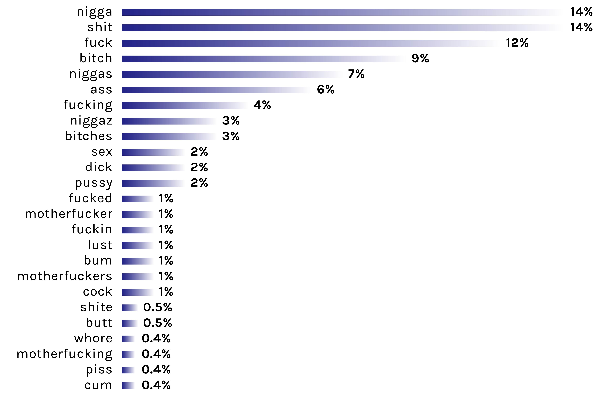

Hip hop & Heavy metal use the most profanity
Folk & Country the least
By Varun Jewalikar and Federica Fragapane at Musixmatch
3rd December, 2015 (4 min read)
By Varun Jewalikar and Federica Fragapane at Musixmatch
3rd December, 2015 (4 min read)
Previously we looked at the vocabulary sizes of popular genres.
Now we focus on the usage of profanity in lyrics.
An average of 0.5% to 0.7% (80-90 words) of all words that a person speaks each day are swear words. 80% of the swearing is accounted by 10 words (fuck, shit, hell, damn, goddamn, Jesus Christ, ass, oh my god, bitch and sucks) 1.
To compare usage of profanity in lyrics to the above numbers we analysed the lyrics of the most popular artists on Musixmatch.

Data overview
The dataset was scanned for the frequency of occurrence of each word from this list of swear words. An average of 0.45% of all words in lyrics are swear words. 1 in every 234 words in lyrics is a swear word. This is slightly less than the frequency of swear words in conversations.
Most used swear words in lyrics
The above 25 swear words account for 91% of swearing in lyrics.
Genres studied
The analysis from the previous section also revealed that 185 words account for 99% of all profanity in lyrics. We analysed the lyrics of the above 8 popular genres for the occurence of these 185 words.

Genres by profanity frequency
1 in every 47 words in Hiphop lyrics is a swear word.

Hiphop
The 'n word' is generally not used in an offensive context in Hiphop. We removed it and its conjugations from the analysis of hiphop lyrics. Without the 'n word', 1 in every 76 words is a swear word in Hiphop lyrics.
Heavy metal lyrics are known for their aggressive and violent imagery. So its no surprise it takes 2nd rank here.
Even though Electronic music is mostly instrumental but it still ranks third.
Pop, Indie Rock and Rock have comparable profanity frequencies (1 in every 1000 words). While Folk lyrics have 1 swear word for every 2925 words, for Country lyrics this is 1 for every 4438 words.
The usage of profanity in lyrics is comparable to it's usage in every day speech. Also, 185 swear words account for 99% of all swearing in lyrics. Using these words considered profane we observe that Hiphop lyrics are the most profane.
But during our research we understood that what can be considered profane is a sensitive issue and depends a lot on contextual factors (culture, geography, time, etc). It is possible to be highly offensive without ever using any profane words. This study is merely a statistical analysis of the lyrics and a way to compare the writing styles used in different genres.